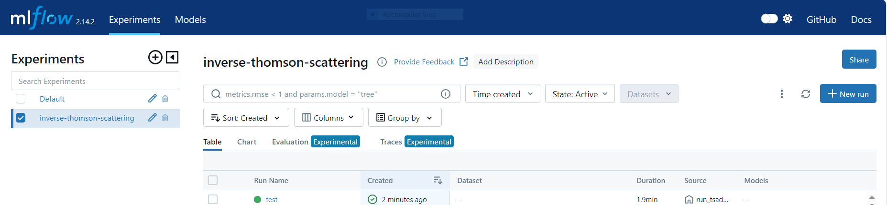
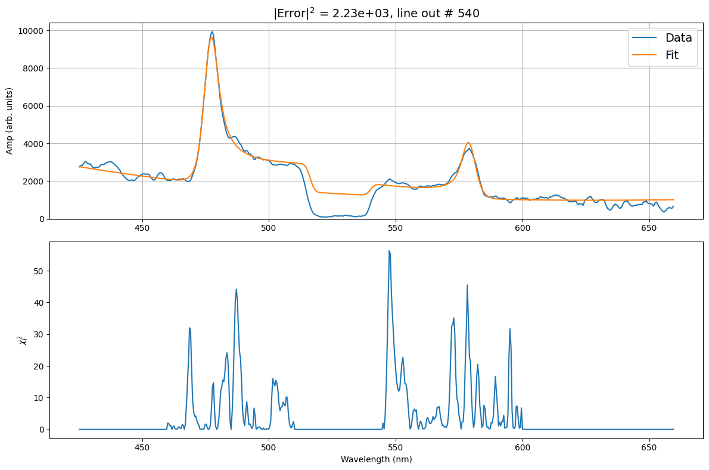
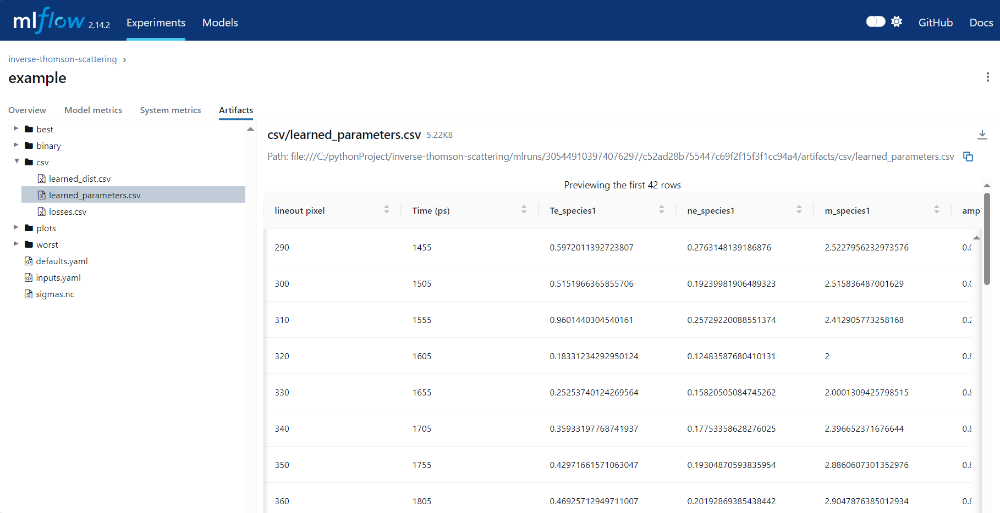
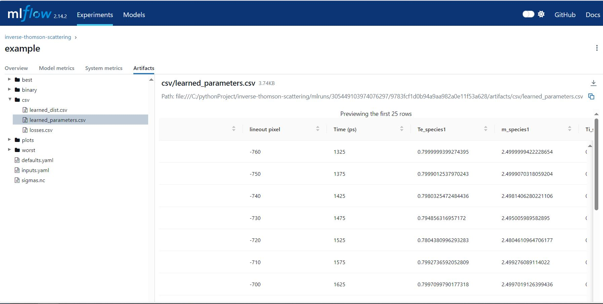

Example: Fitting time-resolved data#
This is an example will walk you through the key steps for fitting time-resolved data.
After loading your data, you wil want to indicate the shotnumber of your experimnet in the Input.yaml deck. The input decks are located in inverse-thomson-scattering/configs/1d. The code will identify the data as time resolved for OMEGA experients, based of the data file. For fitting data files from other sources, please contact the authors.
data:
shotnum: 101675
lineouts:
type:
pixel
Fitting time resolved EPW#
Load the electron spectra, and activate the EPW fit by setting the corresponding booleans to True.
other:
extraoptions:
load_ion_spec: False
load_ele_spec: True
fit_IAW: False
fit_EPWb: True
fit_EPWr: True
PhysParams:
Once you have adjusted the parameters, and saved the changes made. You will want to implement the run command.
python run_tsadar.py --cfg <path>/<to>/<inputs>/<folder> --mode fit
The following command will allow you to visualize the results of the fitting. The output link will redirect you to a local site where the outputs can be viewed.
mlflow ui

The resulting plots can be founs in the Artifacts unedr the folder plots.
Electron fit ranges plot

Best and worst folders contain the best and worst fits respectively. `
Best plots

Worst plots

Dowload the learned parameters to confirm the code ran correctly

Fitting time-resolved IAW#
Load the ion spectra, and activate the IAW fit by setting the corresponding booleans to True. To visualize the outputs, use the mlflow ui command.
other:
extraoptions:
load_ion_spec: True
load_ele_spec: False
fit_IAW: True
fit_EPWb: False
fit_EPWr: False
PhysParams:
Ion fit ranges plot

Best plots

Worst plots

Dowload the learned parameters to confirm the code ran correctly
